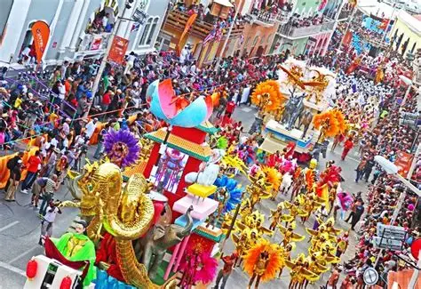

Carnaval em Cabo Verde
O Carnaval é uma das festas mais vibrantes de Cabo Verde, especialmente popular em São Vicente, onde os desfiles coloridos e as batucadas ganham as ruas com inspiração no Carnaval do Brasil, mas com identidade cabo-verdiana única.
Além de ser uma celebração da música e dança, é também um momento de crítica social, arte e comunidade.